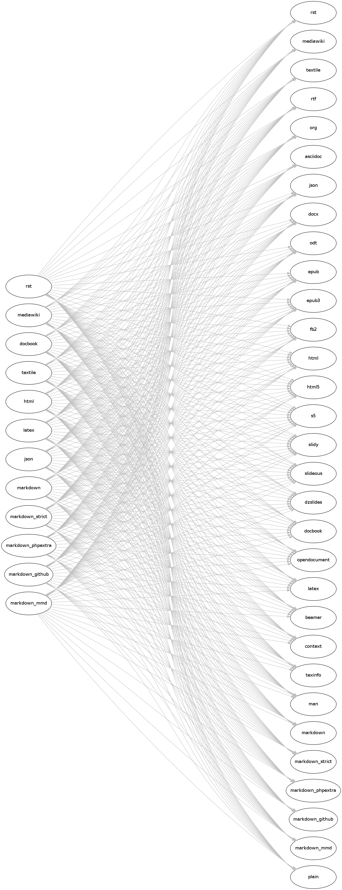

About pandoc
If you need to convert files from one markup format into another, pandoc is your swiss-army knife. Pandoc can convert documents in markdown, reStructuredText, textile, HTML, DocBook, LaTeX, or MediaWiki markup to
- HTML formats: XHTML, HTML5, and HTML slide shows using Slidy, Slideous, S5, or DZSlides.
- Word processor formats: Microsoft Word docx, OpenOffice/LibreOffice ODT, OpenDocument XML
- Ebooks: EPUB version 2 or 3, FictionBook2
- Documentation formats: DocBook, GNU TexInfo, Groff man pages
- TeX formats: LaTeX, ConTeXt, LaTeX Beamer slides
- PDF via LaTeX
- Lightweight markup formats: Markdown, reStructuredText, AsciiDoc, MediaWiki markup, Emacs Org-Mode, Textile
Pandoc understands a number of useful markdown syntax extensions, including document metadata (title, author, date); footnotes; tables; definition lists; superscript and subscript; strikeout; enhanced ordered lists (start number and numbering style are significant); running example lists; delimited code blocks with syntax highlighting; smart quotes, dashes, and ellipses; markdown inside HTML blocks; and inline LaTeX. If strict markdown compatibility is desired, all of these extensions can be turned off.
LaTeX math (and even macros) can be used in markdown documents. Several different methods of rendering math in HTML are provided, including MathJax and translation to MathML. LaTeX math is rendered in docx using native Word equation objects.
Pandoc includes a powerful system for automatic citations and bibliographies, using Andrea Rossato’s citeproc-hs. This means that you can write a citation like
[see @doe99, pp. 33-35; also @smith04, ch. 1]and pandoc will convert it into a properly formatted citation using any of hundreds of CSL styles (including footnote styles, numerical sytles, and author-date styles), and add a properly formatted bibliography at the end of the document. Many forms of bibliography database can be used, including bibtex, RIS, EndNote, ISI, MEDLINE, MODS, and JSON citeproc. Citations work in every output format.
Pandoc includes a Haskell library and a standalone command-line program. The library includes separate modules for each input and output format, so adding a new input or output format just requires adding a new module.
Pandoc is free software, released under the GPL. © 2006-2013 John MacFarlane.
